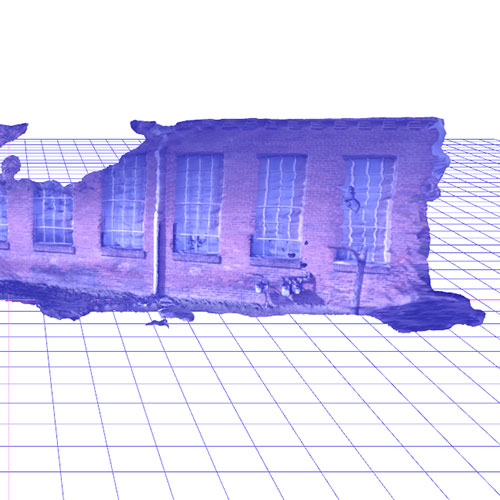
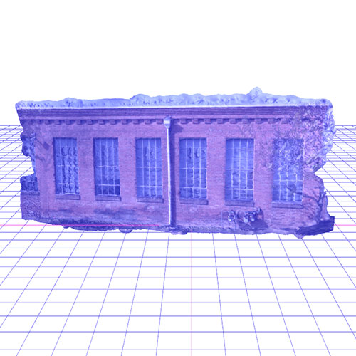

Brick Memories
Durham, North Carolina has a strong history of textile manufacturing from the 1800's to the mid 1900's. The Durham Hosiery Company was a key player in the global hosiery market, and the international success of the company brought economic success to Durham and its community. In the first half of the 20th century, the rise in popularity of silk hosiery signaled the beginning of the end for the Durham Hosiery Company. The building featured in this exhibit, Golden Belt, also manufactured bags for American Tobacco Company, which extended the life of the business. However, the shrinking costs of overseas manufacturing eventually spelled the demise of Durham as a textile kingpin.
Businesses can rise and fall, but brick buildings remain. Across Durham, one see brick warehouses with tall windows, a clear sign that this building had a past life as a mill. But that could have been over 100 years ago. What has the life of the building been since then? Or, in the case of Durham Hosiery Mill No. 2 (the building described in the video's voiceover), the building could have been razed in the interests of “urban renewal”. Today, the site of Durham Hosiery Mill No. 2 is newly constructed luxury condos. This is not the only former mill building in Durham that has been converted into high-end, warehouse loft-style living.
This project raises questions about how our future selves will view and review the choices of the past, and what will be forgotten in the demolition. Do the bricks remember? Will we?
 


Project by Sarah Riazati, 2017.